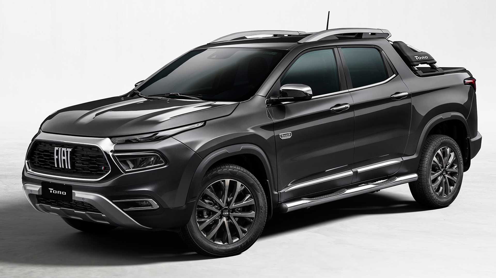

Motorizações: Motor 1.8 E.Torq de até 139 cv; Motor 1.3 turbo flex de 185 cv e motor 2.0 turbo diesel de 170 cv.
Transmissão: câmbio automático de seis marchas para os motores 1.8 e 1.3 turbo e câmbio automático de nove marchas para o motor 2.0 turbo.
Equipamentos: painel de instrumentos digital TFT de 7", central multimídia de 7", USB frontal, 6 airbags, sensor de estacionamento traseiro, lanterna traseira em LED, luzes de rodagem diurna em LED, porta escada, piloto automático, iluminação da caçamba, controle eletrônico de estabilidade e tração com E-Locker TC+, e assistente em rampas.
Preços:
Motorização 1.8 - R$ 114.590
Motor 1.3 turbo - R$ 119.590
Motor 2.0 turbo - R$ 152.590
Opcionais: Capota marítima por R$ 1.200
Motorizações: Motor 1.3 turbo flex de 185 cv ou motor 2.0 turbo diesel de 170 cv.
Transmissão: câmbio automático de seis marchas para o motor 1.3 turbo e câmbio automático de nove marchas para o motor 2.0 turbo.
Equipamentos: faróis full LED, central multimídia de 8,4" roda de liga leve de 17", USB frontal, 6 airbags, paddle shift, câmera de ré, volante em couro, apoio de braço frontal, arras longitudinais no teto, capota marítima, maçanetas e espelhos na cor do veículo. Além de todos os itens presentes da versão Endurance.